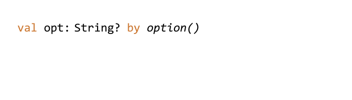

Clikt (pronounced “clicked”) is a multiplatform Kotlin library that makes writing command line interfaces simple and intuitive. It’s the “Command Line Interface for Kotlin”.
It is designed to make the process of writing command line tools effortless while supporting a wide variety of use cases and allowing advanced customization when needed.
Clikt has:
- arbitrary nesting of commands
- composable, type safe parameter values
- generation of help output and shell autocomplete scripts
- multiplatform packages for JVM, NodeJS, and native Linux, Windows and MacOS
What does it look like? Here’s a complete example of a simple Clikt program:
class Hello : CliktCommand() {
val count: Int by option(help="Number of greetings").int().default(1)
val name: String by option(help="The person to greet").prompt("Your name")
override fun run() {
repeat(count) {
echo("Hello $name!")
}
}
}
fun main(args: Array<String>) = Hello().main(args)
And here’s what it looks like when run:
$ ./hello --count=3
Your name: John
Hello John!
Hello John!
Hello John!
The help page is generated for you:
$ ./hello --help
Usage: hello [OPTIONS]
Options:
--count INT Number of greetings
--name TEXT The person to greet
-h, --help Show this message and exit
Errors are also taken care of:
$ ./hello --whoops
Usage: hello [OPTIONS]
Error: no such option: "--whoops".
Installation¶
Clikt is distributed through Maven Central.
dependencies {
implementation("com.github.ajalt.clikt:clikt:3.4.0")
}
In version 3.0, the maven coordinates changed. Make sure you’re using the new coordinates if you’re updating from an older version.¶
If you’re using Maven instead of Gradle, use <artifactId>clikt-jvm</artifactId>¶
Multiplatform¶
Clikt supports the following targets: jvm, mingwX64, linuxX64, macosX64, and js (for both
NodeJS and Browsers). See the docs for more
information about functionality supported on each target. You’ll need to use Gradle 6 or newer.
Snapshots¶
Snapshot builds are also available

You'll need to add the Sonatype snapshots repository:
repositories {
maven {
url = uri("https://oss.sonatype.org/content/repositories/snapshots/")
}
}